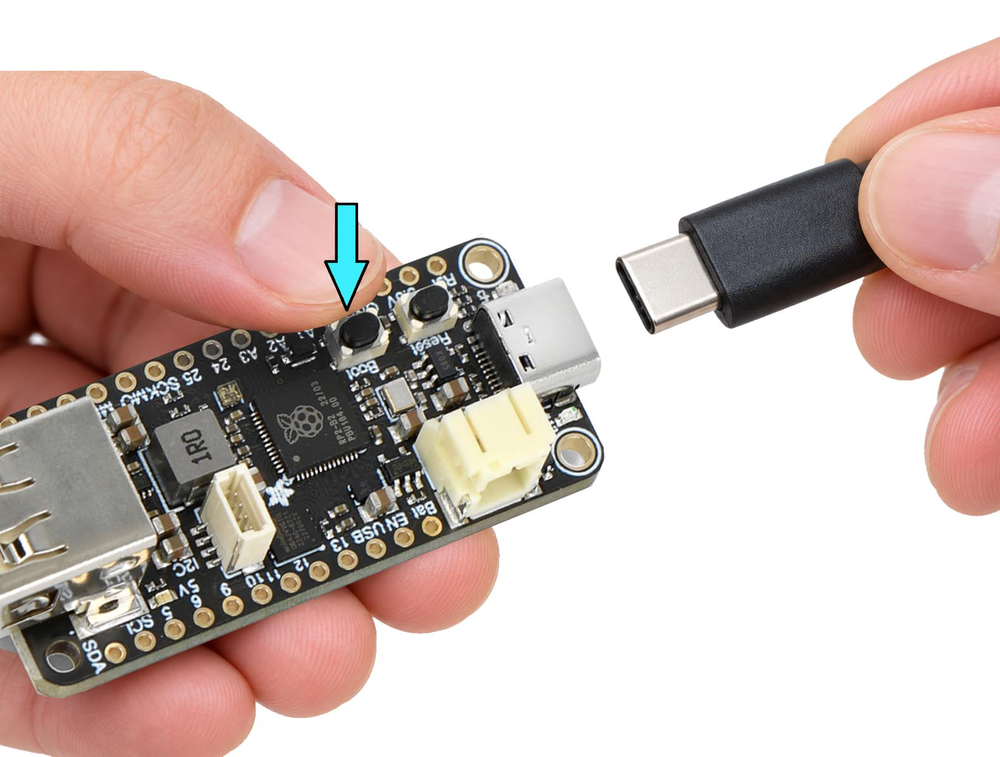
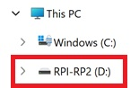

Flash your station
Your config is baked directly into the firmware — no app or server needed after flashing.
1
Enter BOOTSEL mode

Hold the BOOTSEL button on your Feather, plug in the USB cable, then release. A drive named RPI-RP2 will appear in File Explorer.

The RPI-RP2 drive appears in your file explorer.
⏳ Waiting for RPI-RP2…
2
Download firmware
Builds a single .uf2 with your config baked in. One file, one drag, done.
3
Drag onto RPI-RP2
Drag mesonet.uf2 onto the RPI-RP2 drive. The drive disappears when flashing completes and your board reboots with your config.
📟 Serial Monitor
Connect your board via USB and click Connect to see live output.
1
Connect your board
Plug the Atom Lite in via USB-C. No BOOTSEL button needed — the browser resets it into flashing mode automatically.
2
Build & flash firmware
Patches your config into the firmware, then writes it to the board over serial. Takes about 30–60 seconds.
3
Reset & verify
Once flashing completes, the board resets automatically and boots your new firmware. Check the log below to confirm it's running.
📟 Flash Log
Connect your board to see flashing progress here.
📟 Serial Monitor
After flashing, click Connect to view your board's boot output.